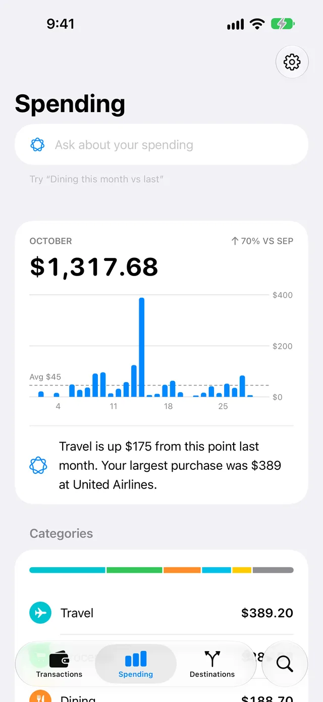
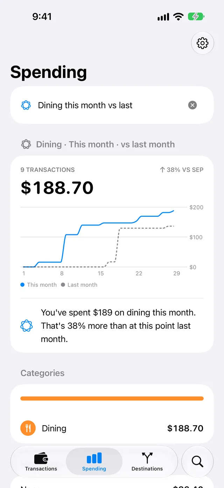

Spending
Spending in WalletFeed shows the total of your Apple Card and Apple Cash purchases for this month on your iPhone. It also shows a bar for each day, your largest categories and merchants, and the charges that occur each month or each week. You can use Spending without WalletFeed Pro.
Open Spending
-
On your iPhone, open WalletFeed.
-
At the bottom of the screen, tap Spending.

Result: WalletFeed reads your transactions from Wallet. Then Spending shows the total and the chart for this month.
WalletFeed calculates the values for Spending on your iPhone. It does not keep your transactions. If Spending does not show a total, refer to If something goes wrong.
The total for this month
The first section of Spending has these parts:
- The name of the month.
- The change from the same time last month, for example "70% VS SEP" with an up arrow. An up arrow shows that the total increased, and a down arrow shows that it decreased.
- The total for this month.
- A chart with one bar for each day of the month. The line with the label "Avg" shows the average for each day, for example "Avg $45".
- The Monthly Summary, below the chart.
The total includes purchases that are pending. Refunds decrease the total. Transfers, bill payments and declined transactions are not in the total.
WalletFeed compares this month with the same days and time of last month. For example, on October 15 at 2:00 PM, WalletFeed compares the total with the total from September 1 to September 15 at 2:00 PM. If that total for last month is zero or less, Spending does not show the change.
The average is the total for this month, divided by the number of days from the first day of the month to this day.
See the total for one day
-
On the chart, put your finger on the bar for a day.
Result: the top of the section shows the date and the total for that day. The other bars become dim.
-
To see a different day, move your finger along the chart.
Monthly Summary
The Monthly Summary is below the chart. It tells you the important facts about this month.
Apple Intelligence writes the Monthly Summary if your iPhone can use Apple Intelligence and Apple Intelligence is on. It uses facts that WalletFeed calculates, for example the total and your largest purchase. A Monthly Summary from Apple Intelligence has the Apple Intelligence symbol.
Apple Intelligence operates on your iPhone. WalletFeed does not send your transactions to a server for the Monthly Summary.
WalletFeed shows its first two facts with a light bulb symbol in these conditions:
- Apple Intelligence is not available on your iPhone.
- Summarize Spending is off in Settings.
- Apple Intelligence does not give a Monthly Summary.
An example of the two facts is "You've spent $1,318 so far this month. That's 70% more than at this point last month."
Stop the Monthly Summary from Apple Intelligence
-
On Spending, tap Settings (the gear button) at the top of the screen.
-
Below Privacy & Security, set Summarize Spending to off.

Result: the Monthly Summary shows the two facts from WalletFeed.
-
Tap Done.
Settings shows Summarize Spending only when Apple Intelligence is available on your iPhone. When Summarize Spending is off, Ask Spending also shows two facts from WalletFeed. To start the Monthly Summary from Apple Intelligence again, set Summarize Spending to on.
Categories and merchants
The Categories section shows the five categories with the largest totals this month. Other shows the total of all other categories. At the top of the section, a bar has a color for each category. The length of each color shows the part of the total for that category.
The Merchants section, at the bottom of Spending, shows the five merchants with the largest totals this month.
Recurring Charges
The Recurring Charges section shows charges that occur again each month or each week, for example subscriptions. The section shows only when WalletFeed finds one or more of these charges. For each charge, the section shows the name, Monthly or Weekly, and the value of the last charge.
To find these charges, Spending reads this month and the two months before it. Apple Intelligence can give each charge a clear name and a type. For example, "NETFLIX.COM 866-579" becomes "Netflix", with the type "Streaming". Then the section shows "Apple Intelligence suggested these names."

For more information, refer to Recurring Charges.
Monthly Installments
If you have Apple Card Monthly Installments, the Monthly Installments section shows your installment charges. It shows the charges for the last month that has installment charges, with the largest charge first. For each charge, the section shows the name, the date, for example "Sep 30", and the value.
Each installment charge has the date of the last day of a month. Thus, until the last day of this month, the section shows the charges from last month. These charges do not show in Recurring Charges.
Wallet does not give WalletFeed the remaining payments or the remaining balance. Thus, the section does not show them.
Use Ask Spending
With Apple Intelligence, Ask about your spending is at the top of Spending.
-
Tap Ask about your spending.
-
Type what you want to see, for example "Dining this month vs last".
-
On the keyboard, tap Go.

Result: Spending shows the total, the chart, the categories and the transactions for what you typed.
-
To see the total for this month again, tap Clear (the x button).
For more information, refer to Ask Spending.
Show new transactions
To show new transactions on Spending, pull the screen down.
If something goes wrong
If Spending shows "No Cards"
WalletFeed does not have access to your Wallet accounts.
- Tap Choose Accounts.
- Select the Wallet accounts for WalletFeed.
For more information, refer to Wallet accounts.
If Spending shows "Wallet Access Off"
Wallet access for WalletFeed is off in the Settings app on your iPhone.
- Tap Open Settings.
- In the Settings app, go to Privacy & Security › Wallet.
- Give WalletFeed access to your Wallet accounts.
If Spending shows "No Spending"
The Wallet accounts that WalletFeed can read have no purchases this month, or your refunds are more than your purchases. For the transactions in the total, refer to The total for this month.
If Spending does not include a Wallet account, refer to Wallet accounts.
If Spending shows "Couldn't Read Wallet"
WalletFeed cannot read your transactions from Wallet. To read Wallet again, pull the screen down.
Related
Updated October 30, 2026